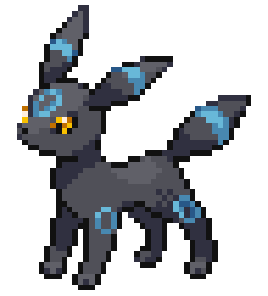
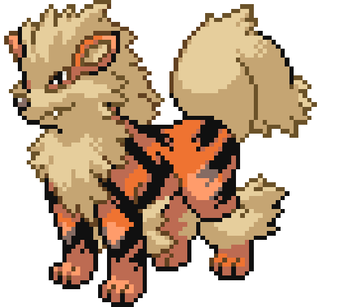

Fellow Nuzlockers, and newbies, rejoice! This is a community where we can share our love and our knowledge of Pokemon Nuzlockes with other fans. Here you will find the history behind Nuzlockes, helpful guides, educational tools, and eventually even a place to share your favorite Pokemon teams with your fellow enthusiasts! Have a good time trainer, and make sure to study hard. I hope to see you again!




